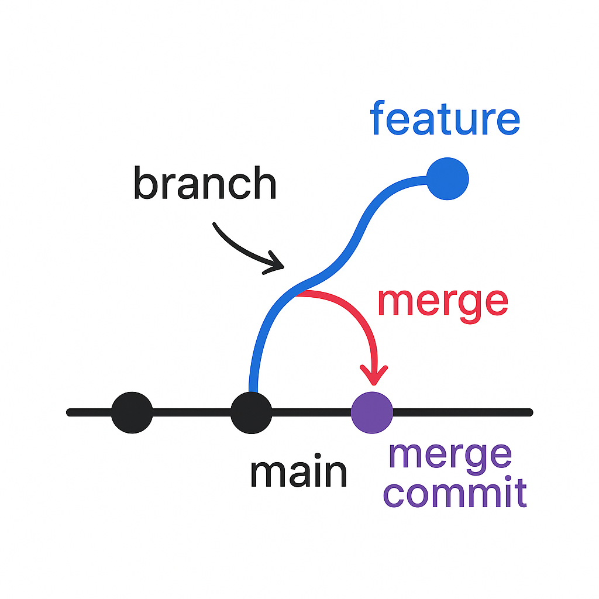
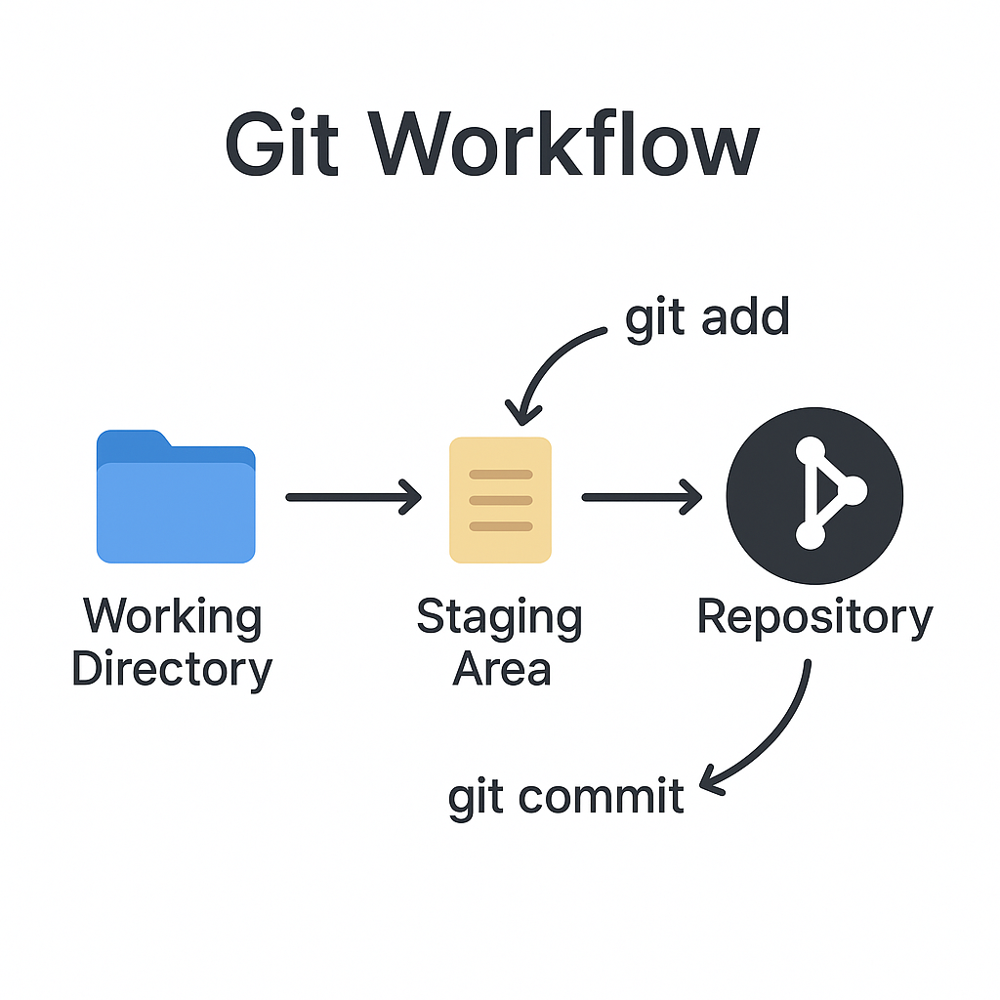

Git Branch
Branching in Git allows you to diverge from the main line of development and continue to work without affecting the main codebase. It's a powerful feature used to isolate development work without impacting other branches.
Create a New Branch
You can create a new branch using the git branch command.
git branch feature-login
Switch Between Branches
To switch between branches, use the git checkout or git switch command.
git checkout feature-login
// or
git switch feature-login
Create an Emergency/Hotfix Branch
For urgent bug fixes, create a hotfix branch directly from main.
git checkout -b hotfix-issue123 main
Delete a Branch
Once a branch is merged and no longer needed, you can delete it.
git branch -d feature-login
// force delete
git branch -D feature-login
Git Merge
Git Merge is used to integrate changes from one branch into another. It's often used to merge feature branches into the main branch.
Performing a Merge
First, switch to the branch you want to merge into, then use git merge.
git checkout main
git merge feature-login
Git No Fast Forward Merge
A no fast forward merge creates a merge commit, preserving the history of the feature branch. This is useful when you want to maintain a clear record of branch integration.
git checkout main
git merge --no-ff feature-branch
Git Fast Forward Merge
A fast forward merge moves the branch pointer forward without creating a merge commit. This keeps the history linear but does not preserve branch separation.
git checkout main
git merge feature-branch
Git Merge Squash
A squash merge combines all commits from a feature branch into a single commit before merging. This helps keep the main branch history clean without preserving individual commits.
git checkout main
git merge --squash feature-branch
git commit -m "Merged feature-branch as a single commit"
Aborting a Merge
If a merge is in progress and needs to be canceled due to conflicts or other reasons, Git provides a way to abort the merge and return to the previous state.
git merge --abort
Merge Conflicts
If Git can’t automatically merge changes, it results in conflicts that need manual resolution.
// Edit conflicting files
// Then add them after resolving
git add filename
git commit
Git Rebase
Git Rebase is used to move or combine a sequence of commits to a new base commit. It helps maintain a cleaner history by applying changes directly onto the target branch.
Performing a Rebase
First, switch to the branch you want to rebase, then use git rebase.
git checkout feature-branch
git rebase main
Interactive Rebase
Interactive rebase allows you to edit, reorder, squash, or delete commits for a cleaner history.
git rebase -i HEAD~3
Rebasing with Conflict Resolution
If conflicts occur during rebase, Git will pause and prompt you to resolve them manually.
// Edit conflicting files
// Then add them after resolving
git add filename
git rebase --continue
Aborting a Rebase
If a rebase needs to be canceled due to conflicts or other reasons, Git provides a way to abort it.
git rebase --abort
Git Workflow
Git Workflow defines how teams use Git branches and merge strategies to manage work. Popular workflows include Feature Branch, Git Flow, and Forking Workflow.
Feature Branch Workflow
Develop each feature in its own branch. Merge into the main branch once complete.
git checkout -b feature-xyz
// work on feature
// merge to main
Git Flow Workflow
This model uses multiple long-running branches: main, develop, feature, release, and hotfix.

Forking Workflow
Common in open source. Contributors fork the repo, make changes, and submit pull requests.
// GitHub
Fork -> Clone -> Branch -> Commit -> Push -> Pull Request